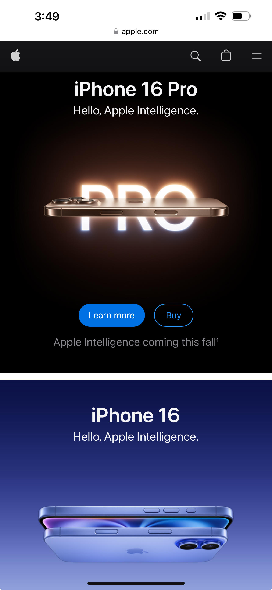
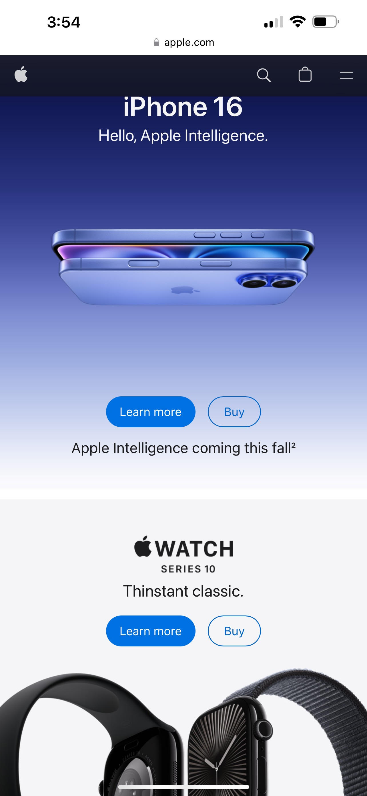
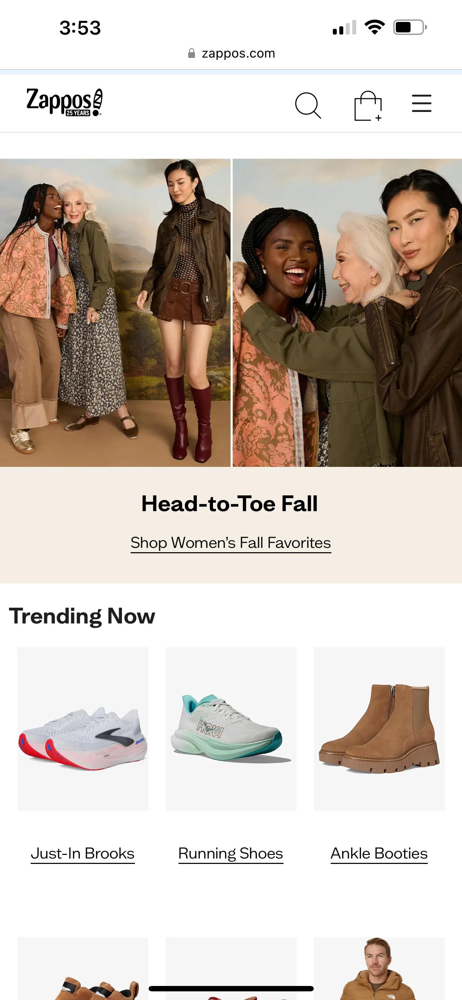
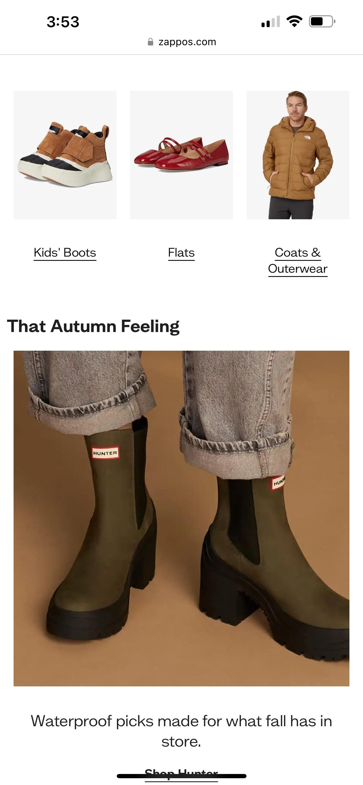
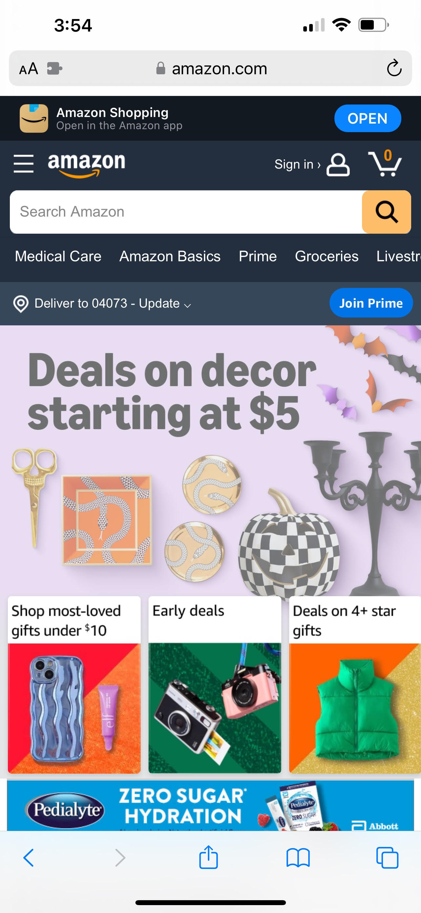
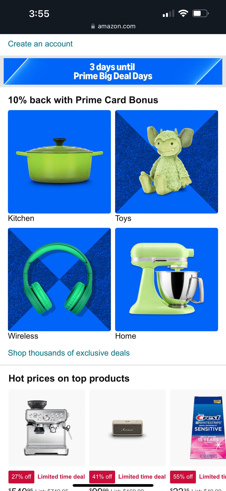

Visual Hierarchy
Apple
apple.com  Visual hierarchy is aimed at keeping the users attention by arranging the elements on the page by importance. The purpose is to draw the users eyes through the page in an organized manner and to focus on the important parts of the site. The Apple website uses visual hierarchy to keep the readers focused on their product. They use colors and contrasts that draw your eye to the images of their products, and the "Learn more" and "Buy" buttons. They also use whitespace to make sure the focus is on their product. The images of their prodcuts are very large and the obvious focal point of the page. The site is not too busy and draws the users attention to the products, how to learn about them, and how to buy them. The site is visually stimulating and draws your eyes through their products.
Fitts' Law
Zappos
zappos.com  Fitts' Law states that the smaller or futher away a target is, the longer it will take for a user to chose them. It talks about interaction costs and how large images make it easier and more efficient for a user to select and therefore have a lower interaction cost. Zappos website is a good example of this principle. On the site they sell hundreds if not thousands of items, but when you go tho their page they show you a few options that can then lead to other options. It makes it easy for the user to make a selection. The page starts with large pictures of the items they are focusing on based on the season. Then you see a few medium size pictures of shoes and boots, and below that they have more large pictures that the user can focus on. It doens't take much time scrolling on that page to have something catch your eye and enable the user to click and move forward in the site experience.
PARC: Alignment
Amazon
amazon.com  Alignment is an important part of website design. Each element on the page needs to be placed with similar elements that are connected. It makes the website look more organized and not cluttered. You also need to have the appropriate space between elements and sections so you have consisten spacing and no large gaps on the site. I believe that Amazon does a great job with aligning all the items on their site. With everythng that Amazon sells it would be easy for the page to be overwhelming or hard to navigate. The site starts with a large searchbar and a menu to help you focus your search on why you came to the site. It then has an area to show their current deals, and then shows other products that the user may be interested in. These products are ordered in an organized fashion, either in a horizontal line, or in a grid like a square. It makes the site easy to navigate and pleasant to look at.